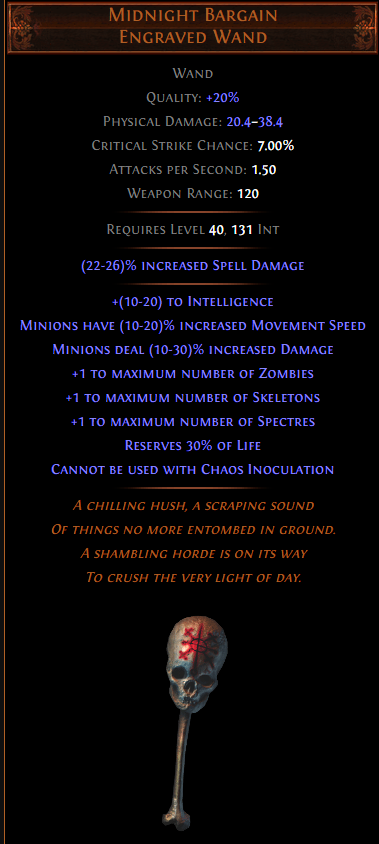
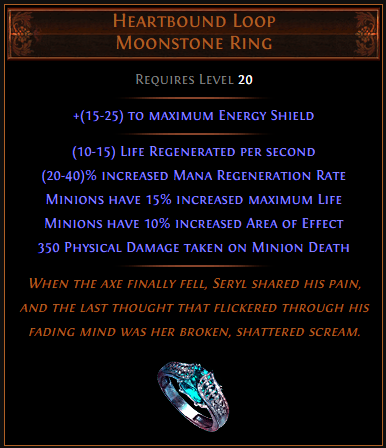
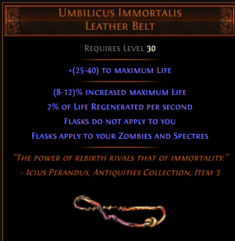

8) ★ 착용하면 안 되는 유니크 아이템
한글화가 되면서 이런 일이 줄어들지 잘 모르겠지만, 페널티가 존재하는 유니크 아이템을 착용해놓고서 "이거 왜이래요?"
하는 질문들이 가끔 올라와서 생각난 김에 적어봅니다.
* 일부 빌드에서는 전략적으로 이용하기도 합니다만, 제 빌드에서는 그런 게 없어서...

여러 옵션이 있긴 한데, 본체 체력의 30%를 깎아먹고 들어갑니다. 다행히도 착용하자마자 바로 티가 납니다.

미니언의 Life가 다 닳거나 지속시간이 다 되어 사라지면 본체가 350의 피해를 입습니다.

플라스크가 본체가 아닌 좀비와 스펙터에게 적용됩니다.